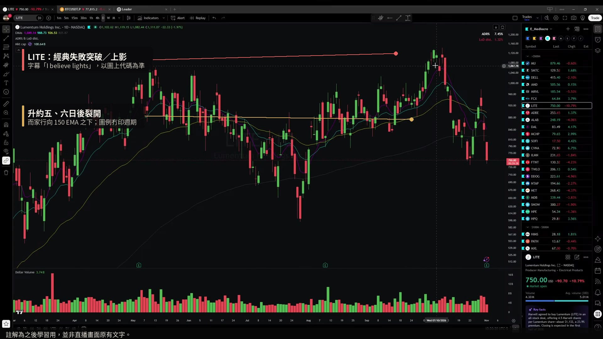
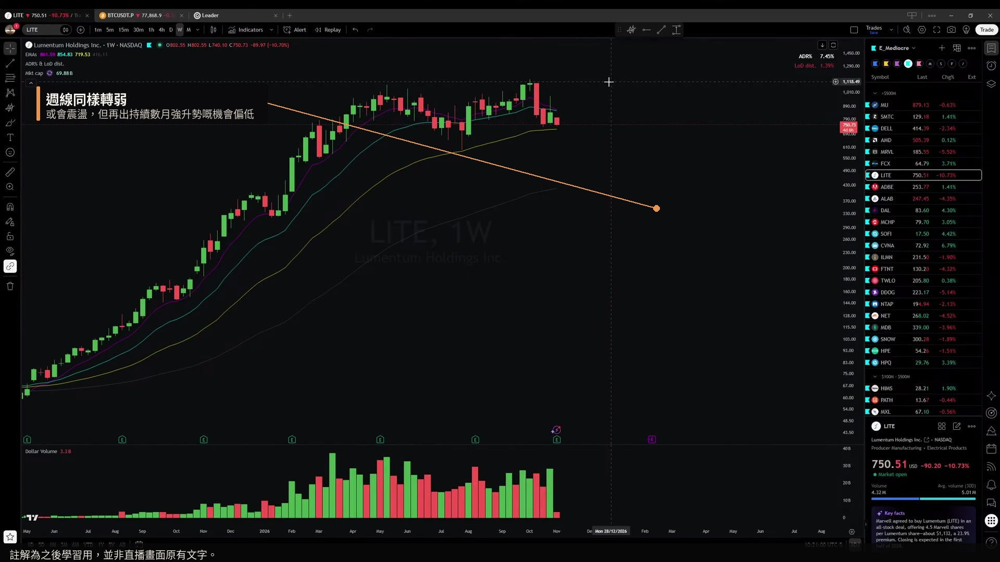

概要
失敗突破之後，再出大升勢嘅機會下降
2:08:31 畫面係 LITE。字幕寫 “I believe lights”，但圖上代碼係 LITE（Lumentum Holdings）。佢話呢個係好經典嘅失敗突破，上面有上影，前面亦有一段整固；之後大約五、六日上升，再裂開，而家行向 150 EMA 之下。或會在呢帶震盪，但以機率計，再出持續數月嘅強升勢機會很低。
圖一 · 主圖
LITE：經典失敗突破，其後裂開
直播 2:08:40

原話
I believe LITE, this one is a very classic failed breakout, the wick of upthrust, which look really like a really good on this base, and we got a five to six days rally before the crack, and now we are heading under the 150 EMA. We may experience some chops here, but probability wise it's very unlikely that we would get another, like we would have another strong uptrend, like yeah, for months.
我相信係 LITE，呢隻係好經典嘅失敗突破，有上影，前面呢段底都睇起來不錯，然後有五到六日上升，再裂開，而家行向 150 EMA 之下。呢度或會震盪，但以機率計，好難再出另一段持續數月嘅強升勢。
YouTube 寫 “I believe lights”、“belt breakout”、“PCP”。代碼以圖上 LITE 為準；失敗突破／上影以畫面同較合理嘅一方更正。型態名稱唔寫死。
點樣讀
讀法係：先有看起來不錯嘅整固同突破嘗試，上影顯示回拒，短暫再升之後裂開，並行向較慢均線之下。
圖例冇印 150。註解只指較慢均線嘅位置。「或會震盪，但再出大升勢機會偏低」係原話裡嘅機率判斷，唔係時間預測。
圖二
週線同樣轉弱
直播 2:09:20

原話
We may experience some chops here, but probability wise it's very unlikely that we would have another strong uptrend for months.
呢度或會震盪，但以機率計，好難再出另一段持續數月嘅強升勢。
點樣讀
週線用來把同一句放在更大框架：轉弱之後，再出長升勢嘅機會下降。
附註
注意事項
- YouTube 把 LITE 聽成 lights，把 failed breakout 聽成 belt breakout。本站按畫面更正。
- 圖例冇印均線週期。
免責聲明：呢份係教育拆解，唔係投資建議，亦唔好當作買賣指示。